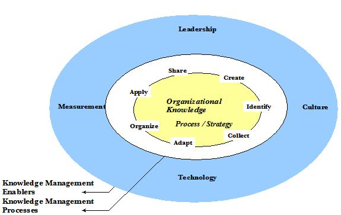

| Guideline: Developing a Knowledge Model |
 |
|
1 DescriptionThe objective of this technique is the creation of a high-level depiction of the state of knowledge management for an organization. The knowledge model may represent the current or future state of knowledge management at the organization. The model is a composite work product, summarizing the findings of the organizational assessments and requirements gathering performed during the development of a strategic knowledge management plan. 2 StepsStep 1 - Determine Purpose of the ModelBecause the knowledge model is a summary document, it is important to understand how this document will be used and who will use it. Review the engagement’s statement of work, proposal and detailed work plans to ascertain the specific intent of the knowledge model for this project. The types of assessment tools used, the kind of requirements gathered and the final project deliverables will all affect the actual format and content of the model that is developed. Step 2 – Document and Review the Model’s PurposeOnce an understanding of the purpose of the model has been developed, document this purpose and draft an outline of the components of the model. Along with this draft, document the intended format of each section of the model along with the source of the information that will be presented. Specify whether the model’s components will be presented in graphical or text format and the level of detail to be presented. Define the planned use of this model in meeting the overall objectives of the engagement. Review the purpose of the model with the project leader and the client to ensure that their expectations are in line with the deliverable being produced. Step 3 – Gather and Review the Model InputsGather and review the results of the assessments and analyses that have been completed concerning the knowledge management activities of the organization. The knowledge model is intended to reflect the overall findings and / or direction for knowledge management. Review the detailed findings, noting the key points that need to be summarized and reflected in the summary model. Inputs to the knowledge model from a knowledge strategy engagement typically include the following information about the organization:
Step 4 – Create the Knowledge ModelBuild the knowledge model using the information gathered in the previous step. The knowledge model will usually be comprised of several separate but related components:
The specific components included or emphasized in the knowledge model will vary from engagement to engagement, depending on the project specific objectives. The following diagram illustrates the possible components of the knowledge model:  |
| © Copyright IBM Corp. 1987, 2012 All Rights Reserved Property of IBM These materials are intended only for use as part of an IBM engagement |